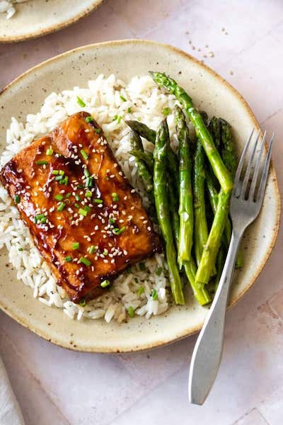

Healthy Teriyaki Salmon Salad

A healthy option for the evening!
This healhy teriyaki salmon rice salad will make sure you get your omega 3 intake as well as keeping you fuller for longer with the nutty brown rice.
Again, this is a super easy recipe and one that I love to eat on a Sunday evening with my girlfriend.
Ingredients
- 2 cups cooked brown rice (from 1 cup uncooked rice)
- Salmon fillets
- Olive oil
- Sesame seeds
- Asparagus
- Store bought Teriyaki sauce
Instructions
- Preheat the oven to 200 C
- Grease a baking dish with a little bit of olive oil and add the salmon fillets.
- Pour sauce over the salmon fillets and marinate for at least 10 minutes.
- Meanwhile, cook the rice in a pot of boiling water for 30mins
- While rice is cooking, steam asparagus and set aside
- Bake the salmon fillets for 13 or until the salmon is cooked through. Cooking time depends on the thickness of the salmon.
- Once rice is ready, transfer to a bowl and lay asparagus ontop
- When the salmon is ready, add some sesame seeds on top, garnish with chopped chives and serve immediately.